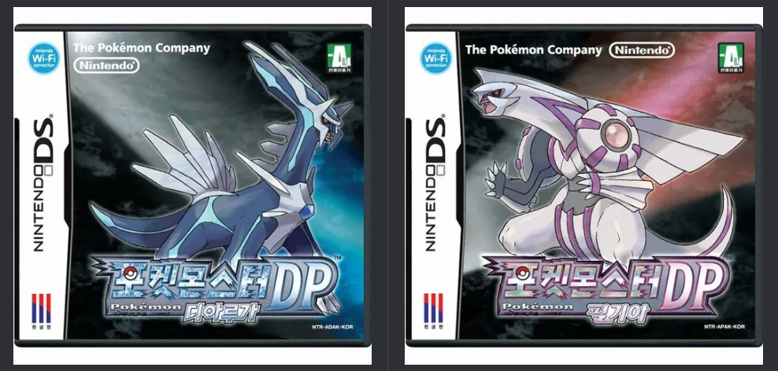
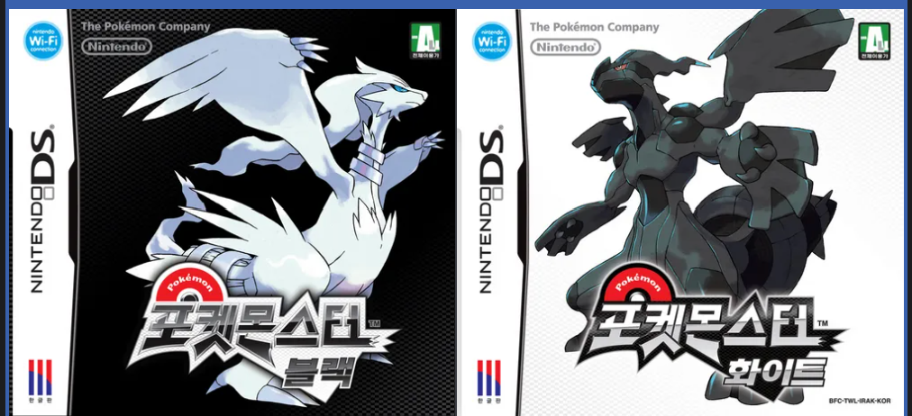
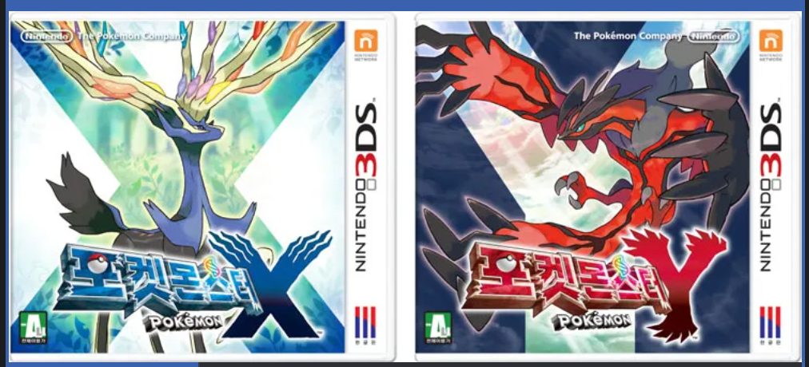
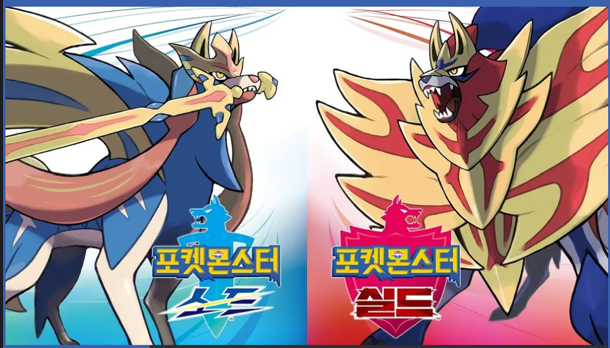

게임 이름 : 포켓몬스터
요약 설명
닌텐도, 게임 프리크와 크리처스가 공동 설립한 일본 기업 포켓몬 컴퍼니가 관리하는 미디어 프랜차이즈
가공의 생물 포켓몬과 공존하는 인간들을 포켓몬 트레이너로 칭하여 이 포켓몬들을 육성해 스포츠와 같은 배틀을 하는 가상의 세계를 무대로 하는 게임
포켓몬스터 시리즈 종류
| 세대 | 출시 | 게임명 | 발매일 | 판매량 |
|---|---|---|---|---|
| 1세대 | 게임보이 / 게임보이 컬러 | 포켓몬스터 레드·그린 | 1996년 2월 27일 | 3,181만 장 |
| 1세대 | 게임보이 / 게임보이 컬러 | 포켓몬스터 블루 | 1996년 10월 15일 | 157만 장 |
| 1세대 | 게임보이 / 게임보이 컬러 | 포켓몬스터 피카츄 | 1998년 9월 12일 | 1464만 장 |
| 2세대 | 게임보이 컬러 | 포켓몬스터 금·은 | 1999년 11월 21일 | 2310만 장 |
| 2세대 | 게임보이 컬러 | 포켓몬스터 크리스탈 버전 | 2000년 12월 14일 | 639만 장 |
| 3세대 | 게임보이 어드밴스 | 포켓몬스터 루비·사파이어 | 2002년 11월 21일 | 1622만 장 |
| 3세대 | 게임보이 어드밴스 | 포켓몬스터 파이어레드·리프그린 | 2004년 1월 29일 | 1200만 장 |
| 3세대 | 게임보이 어드밴스 | 포켓몬스터 에메랄드 | 2004년 9월 16일 | 706만 장 |
| 4세대 | 닌텐도 DS | 포켓몬스터 다이아몬드·펄 | 2006년 9월 28일 | 1767만 장 |
| 4세대 | 닌텐도 DS | 포켓몬스터 디아루가·펄기아 | 2007년 9월 28일 | 769만 장 |
| 4세대 | 닌텐도 DS | 포켓몬스터 하트골드·소울실버 | 2009년 9월 12일 | 1230만 장 |
| 5세대 | 닌텐도 DS | 포켓몬스터 블랙·화이트 | 2010년 9월 18일 | 1564만 장 |
| 5세대 | 닌텐도 DS | 포켓몬스터 블랙2·화이트2 | 2012년 6월 23일 | 832만 장 |
| 6세대 | 닌텐도 3DS | 포켓몬스터 X·Y | 2013년 10월 12일 | 1655만 장 |
| 6세대 | 닌텐도 3DS | 포켓몬스터 오메가루비·알파사파이어 | 2014년 11월 21일 | 1466만 장 |
| 7세대 | 닌텐도 3DS | 포켓몬스터 썬·문 | 2016년 11월 18일 | 1637만 장 |
| 7세대 | 닌텐도 3DS | 포켓몬스터 울트라썬·울트라문 | 2017년 11월 17일 | 872만 장 |
| - | 닌텐도 스위치 | 포켓몬스터 레츠고! 피카츄·레츠고! 이브이 | 2018년 11월 16일 | 2617만 장 |
| 8세대 | 닌텐도 스위치 | 포켓몬스터 소드·실드 | 2019년 11월 15일 | 2591만 장 |
| 8세대 | 닌텐도 스위치 | 포켓몬스터 브릴리언트 다이아몬드·샤이닝 펄 | 2021년 11월 19일 | 1500만 장 |
| 8세대 | 닌텐도 스위치 | Pokémon LEGENDS 아르세우스 | 2022년 1월 28일 | 1497만 장 |
| 9세대 | 닌텐도 스위치 | 포켓몬스터 스칼렛·바이올렛 | 2022년 11월 18일 | 2486만 장 |
| 9세대 | 닌텐도 스위치 | Pokémon LEGENDS Z·A | 2025년 예정 | 예정 |
자주 플레이한 포켓몬스터 시리즈
1. 포켓몬스터 DP 디아루가·펄기아
포켓몬스터 4세대의 첫 작품이자 포켓몬스터 시리즈 10주년을 기념하여 나온 작품이다.
한국 닌텐도가 정식으로 발매한 최초의 포켓몬스터 게임이다.
광범위한 무선 통신 시스템의 도입, 포켓몬 포획 수단의 다양한, 기술 밸런스 평준화 등 이전 시리즈와는 차별화된 장점을 가지고 있는 최고의 시리즈 중 하나이다.
개인 평가
포켓몬스터 게임 시리즈에 입문하게 된 작품으로 당시 할 수 있었던 게임 중에서는 가장 재밌게 했던 게임으로 기억에 남아있음
모든 스토리를 다 깨더라도 포켓몬 도감이라는 것을 채워야 하는 후속 과제가 있었다는 점에서 단기적인 게임이 아닌 중장기적인 게임으로써 즐길 수 있었음
2. 포켓몬스터 블랙·화이트
2010년에 발매된 5세대 포켓몬 시리즈의 첫 번째 작품이다.
다른 시리즈와 차별되는 대표적인 특징으로는 블랙 시리즈에서는 흰색의 레시라무를 잡고, 화이트 시리즈에서는 검정색의 제크로무를 잡는다는 점이다.
또한 후속작 포켓몬스터 블랙2·화이트2에서 블랙2 시리즈에서는 검정색의 제크로무, 화이트2 시리즈에서 흰색의 레시라무를 잡는다는 점에서 처음부터 2부작으로 계획하고 시리즈를 제작한 것으로 보인다.
새로운 지방과 새로운 포켓몬의 도입, 정식 한국어판 발매 등 새로운 시도를 많이 한 작품이다.
개인 평가
새로운 지방과 새로운 포켓몬을 많이 도입함으로써 기존의 포켓몬뿐만 아니라 추가적인 포켓몬을 잡아야 했다는 점이 어려웠다.
또한 이 시리즈를 한 뒤 추가적으로 후속작이 나와서 더더욱이 재밌게 플레이했던 기억이 있다.
원래는 비용적인 측면 때문에 한 시리즈만 구매해서 플레이했었는데 모든 시리즈를 구매한 최초의 시리즈였다.
3. 포켓몬스터 X·Y
포켓몬스터 시리즈의 6세대 게임으로서 본가 시리즈 최초로 풀 3D 모델링이 도입되었으며, 유일하게 확장판이 없는 시리즈이다.
전투 화면에서 사용되는 700마리 이상의 포켓몬들 전부 3D로 모델링 및 애니메이션이 제작되었다.
또한 기존 시리즈에서는 불가능했던 대각선 이동, 의자/침대 등의 사물에 앉거나 눕는 등 다양한 시점 변환 적용이 시작되었다.
메가진화라는 새로운 진화 형태를 추가해서 포켓몬 육성 및 전투의 다양화가 진행되었다.
포켓몬을 터치해서 만지고 교감하는 포켓파를레, 사파리존의 부활, 포켓몬 시리즈들의 클라우드 박스이자 연동을 담당하는 포켓몬 뱅크, 여러가지 버프를 일정 시간마다 받을 수 있는 O파워 등의 새로운 콘텐츠 역시 추가되었다.
개인 평가
닌텐도 3DS가 생기고 난 뒤 최초의 포켓몬 시리즈로서 단순히 2D로만 즐겨왔던 포켓몬스터가 3D로 좀 더 생생하게 움직이고 전투를 한다는 점에서 신박하고 흥미가 있었다.
또한 이전과는 다른 새로운 대륙에서 또다시 플레이할 수 있었다는 점에서 반복되는 지역으로 인한 지루함이 거의 없었다.
여러가지 육성 시스템의 변화 및 추가로 다양하게 전략적으로 전투를 하고 스토리를 미는 재미도 느낄 수 있었다.
4. 포켓몬스터 소드·실드
포켓몬스터 시리즈의 8세대 게임으로서 닌텐도 스위치 발매 이후 2번째로 나온 본가 포켓몬 시리즈 작품이다.
메가진화 및 Z기술의 삭제, 다이맥스 기능의 추가로 포켓몬 육성 방식의 새로운 변화가 도입되었다.
와일드 에리어와 스토리 진행마다 마을의 시간 변동 등 새로운 시스템이 도입되었다.
또한 DLC 형태의 외전 스토리의 추가 도입으로 메인 스토리 진행, 포켓몬 도감 완성 이후 추가적인 스토리 진행을 통해 다양성을 높였다.
개인 평가
닌텐도 스위치 발매 후 이전 시리즈들 처럼 스토리 진행, 포켓몬 도감 채우기 등의 활동을 할 수 있는 최초의 작품으로서 기대를 하고 플레이를 시작했었다.
메인 스토리 진행 뿐만 아니라 다양한 포켓몬 포획 및 육성 방향성 등 전략을 세우는 재미도 있었고 외전 역시 스토리를 대충 만든 것이 아니라 나름의 재미 또한 느낄 수 있었다.
이후 동굴 탐험 등 지속적인 콘텐츠를 유지할 수 있었기 때문에 한 번 단기적으로 깨고 난 뒤 접속을 하지 않게 되는 것이 아니라 지속적으로 접속해서 전투 및 육성을 진행하게 되었다는 점에서 좋았다.
5. Pokémon LEGENDS 아르세우스
2022년 발매된 포켓몬스터 시리즈로 신오지방 과거인 히스이지방이라는 곳을 배경으로 한 세미 오픈 월드 액션 RPG 게임이다.
포켓몬스터 시리즈라는 이름만을 가지고 있을 뿐 다른 포켓몬스터 시리즈와는 별개의 게임이라고 봐도 무방하고 젤다의 전설과 비슷한 유형의 게임이라고 보면 된다.
개인 평가
기존의 포켓몬스터 시리즈와는 다르게 RPG 유형의 게임이라고 해서 RPG 게임을 좋아하는 사람으로써 플레이해보게 되었었다.
하지만 매우 높은 난이도와 닌텐도 스위치라는 기기의 한계성 때문에 접근성이 떨어졌었다.
따라서 모든 스토리를 진행하는 것이 아니라 중간에 하차하게 되었다.
재미가 없었던 것은 아니지만 난이도 조절의 실패, 그래픽이 그다지 좋지 않았었다는 점에서 아쉬움이 남았었다.